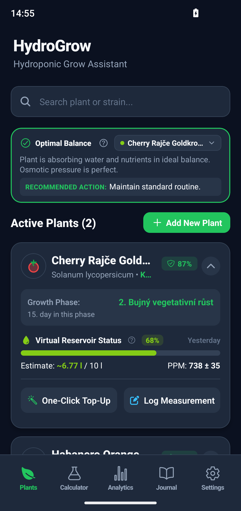
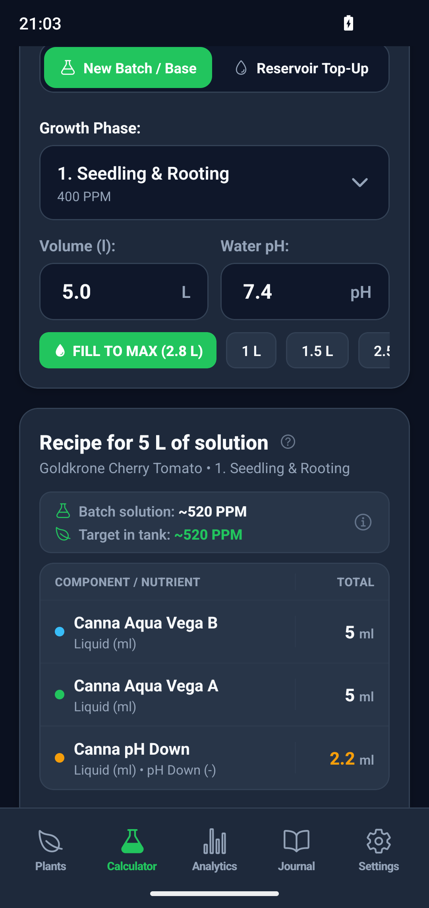
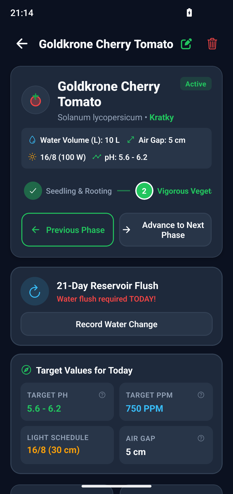
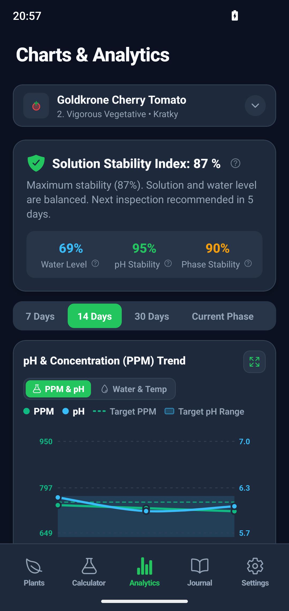
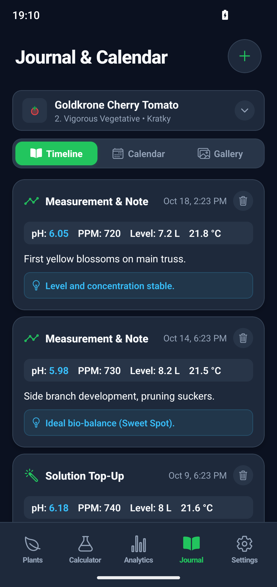
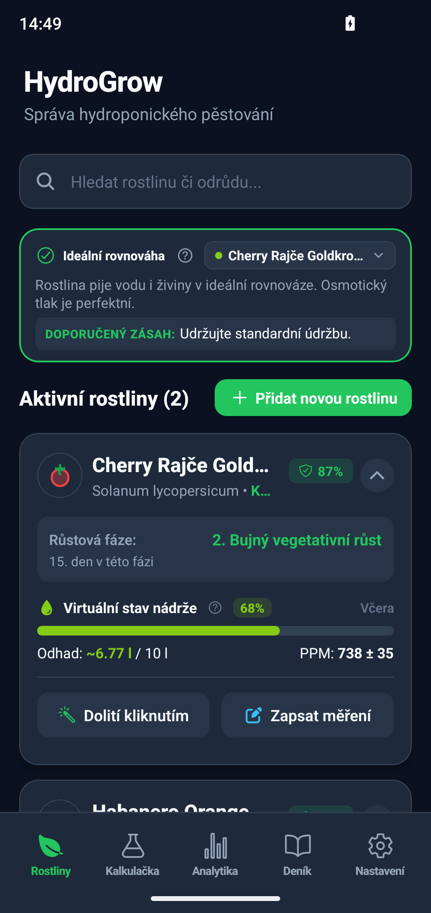
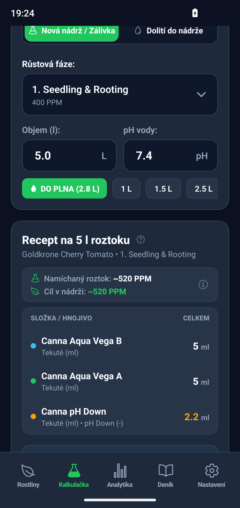
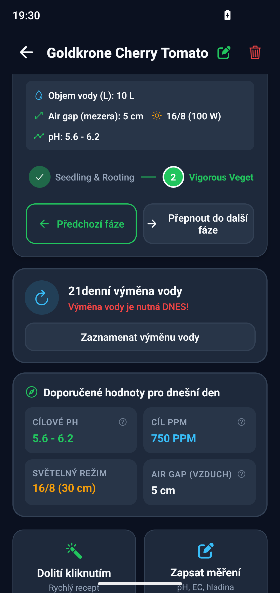
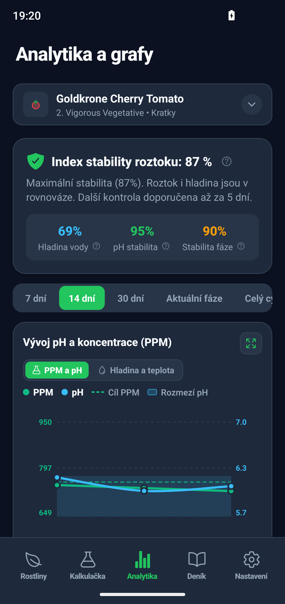
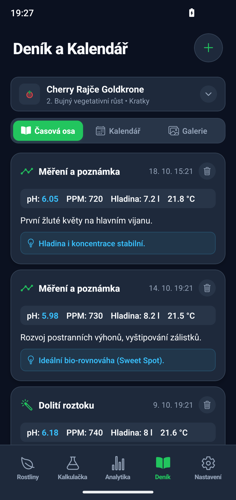

HydroGrow is an offline-first hydroponics manager for Kratky, DWC, NFT, and Ebb & Flow systems. Automated salt dynamics tracking, exact DO PLNA deficit dosing, and 7-state biological solution health diagnostics.

Plants drink water faster than mineral salts in warm conditions. Blindly topping up with standard formulas burns roots and spikes EC.

HydroGrow evaluates EC and pH trajectories in real time, detecting biological imbalances in your reservoir before your plants show visible deficiency or stress symptoms.

Inspect multi-parameter graphs tracking pH, EC, water levels, and reservoir temperatures throughout your crop's complete growth cycle.

Track root growth, reservoir flushes, and harvest yields with high-resolution photo logs and detailed cultivation records.

Zero cloud dependency, zero trackers, and total freedom over your cultivation data.
All reservoir readings, plant notes, root inspection photos, and recipes are stored strictly in the private, sandboxed SQLite database on your local device.
User-initiated encrypted backup using restricted drive.file scope. HydroGrow only accesses its dedicated HydroGrow Backups folder and has zero access to personal files.
Zero preloaded bloatware. You have complete freedom to define your own crop varieties, reservoir capacities, and stage-specific EC/pH target corridors.
HydroGrow je offline asistent pro pěstování v hydroponických systémech Kratky, DWC, NFT i Ebb & Flow. Přesné sledování dynamiky solí, automatický výpočet deficitu DO PLNA a 7 stavů biologické diagnostiky roztoku.

Rostliny pijí vodu rychleji než minerální soli v teplém prostředí. Dolití nádrže plnou dávkou běžného hnojiva spálí kořeny a vystřelí EC.

HydroGrow vyhodnocuje trajektorie EC a pH v reálném čase a odhalí biologickou nerovnováhu v nádrži dříve, než rostliny projeví viditelné příznaky nedostatku či stresu.

Prohlížejte si vývoj pH, EC, hladiny vody a teplot v přehledných koridorech po celou dobu životního cyklu vaší plodiny.

Zaznamenávejte vývoj kořenů, proplachy nádrže a sklizeň pomocí fotodokumentace ve vysokém rozlišení a podrobných pěstitelských zápisků.

Nulová závislost na cloudu, žádné trackery a plná kontrola nad vašimi pěstitelskými daty.
Všechna data měření, deníky, fotografie kořenů i receptury jsou uloženy výhradně v interní SQLite databázi ve vašem telefonu.
Přímé šifrované zálohování s restriktivním rozsahem drive.file. Aplikace má přístup výhradně do vlastní složky HydroGrow Backups.
Žádná vnucená data. Máte naprostou svobodu si nastavit vlastní rostliny, objemy nádrží i specifické koridory EC a pH.